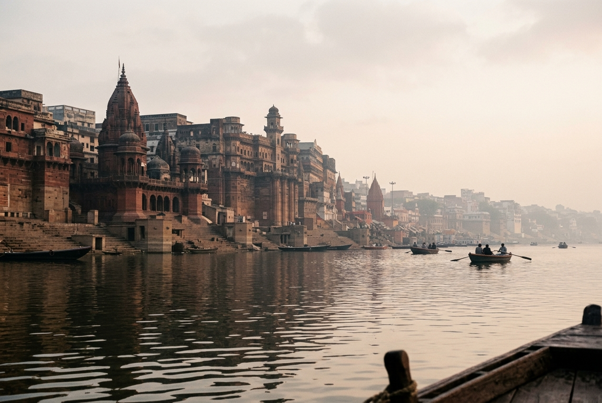
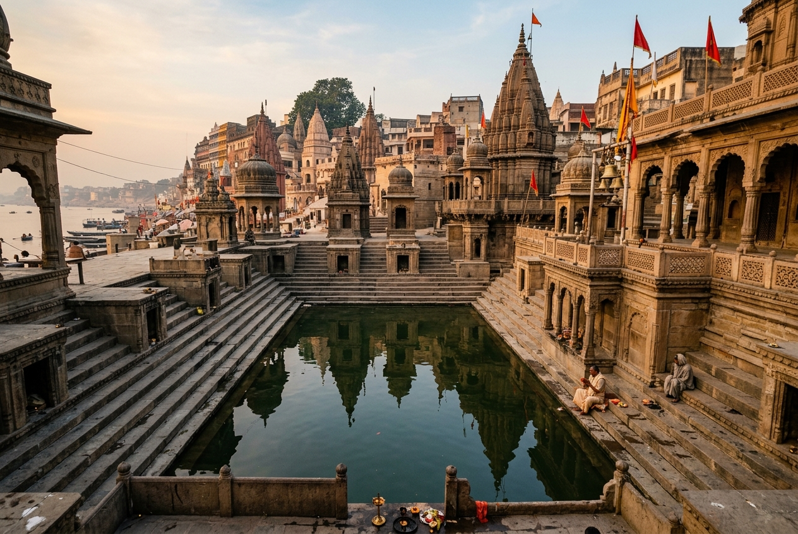
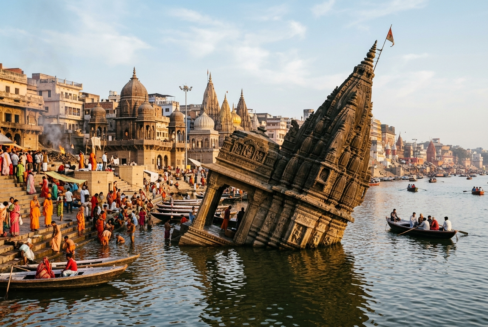
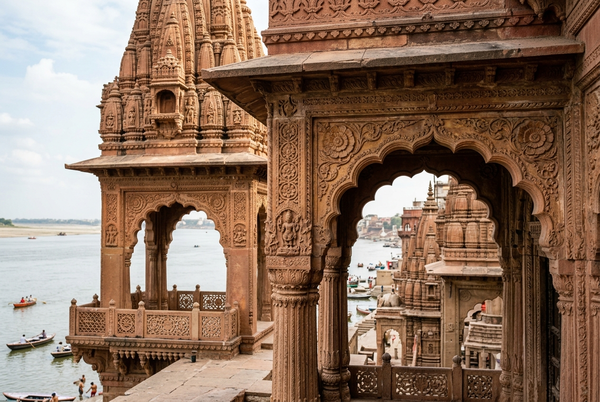

Manikarnika Ghat
Varanasi's Sacred Cremation Riverfront
Situated at the heart of Varanasi's historic riverfront on the banks of the holy Ganga, Manikarnika Ghat is one of the oldest, most sacred, and historically prominent ghats in India. Regarded as Kashi's principal cremation ground, it stands as a profound symbol of the Hindu philosophy of life, transition, and eternal spiritual liberation.
📜 Historical Background & Heritage
Ancient References
Manikarnika is mentioned in scriptures dating back over two millennia, including the Narada Purana, Skanda Purana, and the Matsya Purana. Historically, it is documented as one of the oldest riverfront structures in Kashi, functioning continuously as a pilgrimage destination and a ritual site.
Architectural Development
The ghat's steps and stone embankments have been rebuilt and restored over the centuries. Significant stone construction was undertaken in 1302 CE. In the late 18th century, the ghat was extensively renovated and reinforced with red sandstone under the royal patronage of the Maratha Queen, Rani Ahilyabai Holkar of Indore, and Peshwa Baji Rao.
Varanasi's Sandstone Steps
The red sandstone architecture of Manikarnika Ghat features high stone columns, viewing galleries, and classic arches. These structures showcase the signature style of 18th-century Maratha architecture, designed to withstand the annual seasonal floods of the Ganga River.
🕉️ Sacred Significance & The Concept of Moksha
The Threshold of Moksha
In Hindu theology, Kashi (Varanasi) is the city of Lord Shiva, and dying or being cremated here is believed to grant Moksha—the ultimate liberation from the eternal cycle of birth, death, and rebirth (Samsara).
The Taraka Mantra
According to local belief and scriptures, Lord Shiva himself visits Manikarnika Ghat to whisper the Taraka Mantra (the saving chant of liberation) into the ear of the departed souls, ensuring their transition to spiritual peace.
Panchatirthi Pilgrimage
Manikarnika is a primary stop in the sacred Panchatirthi yatra. Even for those not performing final rites, visiting the ghat, bathing in its steps, and paying respects at its temples are essential parts of a Kashi pilgrimage.
🛕 The Sacred Manikarnika Kund (Chakra-Tirtha)
Mitigating Legend of Lord Vishnu
Adjacent to the steps is the Manikarnika Kund, a rectangular pool considered older than the Ganga itself. Legend holds that Lord Vishnu dug this pond with his chakra (discus) to perform penance for Lord Shiva. Shiva was so pleased with Vishnu's devotion that his earring (manikarnika) fell into the pool, giving the ghat and pond their name.
Charanapaduka (Footprint of Vishnu)
On a marble slab near the Kund lies a pair of footprints, revered as the Charanapaduka (sacred footprints) of Lord Vishnu. For centuries, pilgrims have offered prayers here before taking a holy dip in the Kund, believed to cleanse lifetimes of spiritual impurities.
🔥 Cremation Traditions & Respectful Observance
The Eternal Fire & Dom Raja Lineage
The sacred fire used to light the funeral pyres at Manikarnika is said to have burned continuously for thousands of years. The keepers of this fire are the Dom Raja family—a lineage of traditional keepers who have managed the ghat's rituals for generations. According to ancient legends, King Harishchandra worked under the ancestor of the Dom Raja to uphold truth and duty.
The Rites of Passage
Cremation at Manikarnika is a solemn, ritualistic process. The departed is first bathed in the sacred waters of the Ganga. Prayers are chanted, and the family performs circumambulations of the pyre. This transition of life into ash serves as an open, daily reminder of impermanence (Anitya) in Hindu philosophy.
Etiquette of Silent Respect
As Manikarnika remains an active cremation ground, visitors are expected to observe the site with deep respect and silence. Photography and videography of cremations are strictly prohibited to preserve the dignity of grieving families. Observing the ghat from a distant boat provides a quiet way to reflect on the spiritual atmosphere.
📖 Legends & Literary References
- King Harishchandra's Trial: The legendary king Harishchandra, known for his absolute commitment to truth, served as an assistant at this cremation ghat during his trials. His story is commemorated in both Sanskrit literature and early Indian cinema.
- Kashi Khanda of Skanda Purana: Contains extensive verses detailing the merits of bathing at Manikarnika and the history of Vishnu's chakra-tirtha pool.
- Adi Shankaracharya: The great philosopher composed the Manikarnika Ashtakam here, an eight-stanza hymn praising the spiritual power of the ghat.
🎨 Spiritual Geography & Cultural Context
- Spiritual Center of Kashi: Located centrally along Varanasi's crescent-shaped riverfront, it sits between Scindia Ghat to the north and Lalita Ghat to the south.
- Duality of Life & Death: While neighboring ghats host musical concerts, markets, and festive Aartis, Manikarnika remains dedicated to final transition, illustrating the co-existence of life and death in Indian culture.
- Continuous Activity: Day and night, Manikarnika is a place of activity, standing as a testament to Varanasi's title as one of the oldest continuously inhabited cities in the world.
💡 Key Facts About Manikarnika Ghat
- Ratneshwar Mahadev Temple: A famous temple near the water's edge that leans at a 9-degree angle (more than the Leaning Tower of Pisa) due to a silted foundation.
- Chakra-Tirtha Pool: The sacred Manikarnika Kund is cleaned annually during festival periods, maintaining its historic structure.
- Ahilyabai Holkar's Legacy: The Maratha queen's renovations in the 1700s consolidated multiple smaller ghat areas into the current Manikarnika structure.
- Daily Rites: Dozens of cremations take place daily, handled with traditional discipline and rites.
- Historical Travelers: Famed historical travelers, including Xuanzang and later British explorers, recorded the active ritual life at this ghat in their diaries.
- Panchakroshi Route: Manikarnika serves as a crucial point where pilgrims complete their 80-kilometer Kashi circumambulation route.
Visual Heritage Gallery

Manikarnika Ghat Architecture
A respectful view of the historic red sandstone steps and temples from the Ganga River.

The Manikarnika Kund
The ancient sacred pool of Chakra-Tirtha, surrounded by steps and shrines.

Ratneshwar Mahadev Temple
The famous leaning stone temple standing partially submerged in the river.

Architectural Heritage
Intricate red sandstone carvings and galleries built by Maratha rulers in the 18th century.